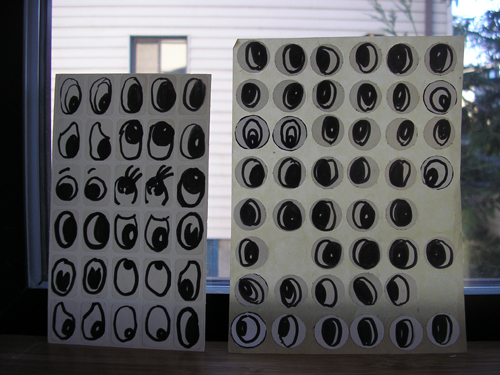

The Pajama Game
curated by Jason Hirata
February 5 - 27 2011
The Pajama Game installation view
Gretchen Bennett - detail
Gretchen Bennett - detail
The Pajama Game installation view
View photos from the opening night here:www.myheroesdiedofsyphilis.com
Review by Jessica Powers on ArtSlant: Close Quarters and Simple Chance
Jason Hirata and Sol Hashemi navigating the installation of The Pajama Game.
_______________________________________________________NEPO Little Treats: The Pajama Game
The Pajama Game
an exhibition curated by Jason Hirata
Gretchen Bennett
Sol Hashemi
Matthew Offenbacher
Daphne Stergides
Ian Toms
Please join us for the opening on Saturday February 5th 2011, 6 - 8 pm
Afterwards, there will be a movie screening in our living room from 8 to 10 pm.
This is the first installment in our brand new NEPO Little Treats series of exhibitions at NEPO House. We will present a series of monthly shows that will focus on presenting new work by individual artists and small group shows. In order to avoid moving too much furniture the shows will take place only and entirely in our entry room.
The openings will take place on the first Saturday of a month from 6 to 8 pm (with optional movie screenings afterwards).
NEPO House regular open hours are Wednesdays and Thursdays 12 -2 pm and by appointment.